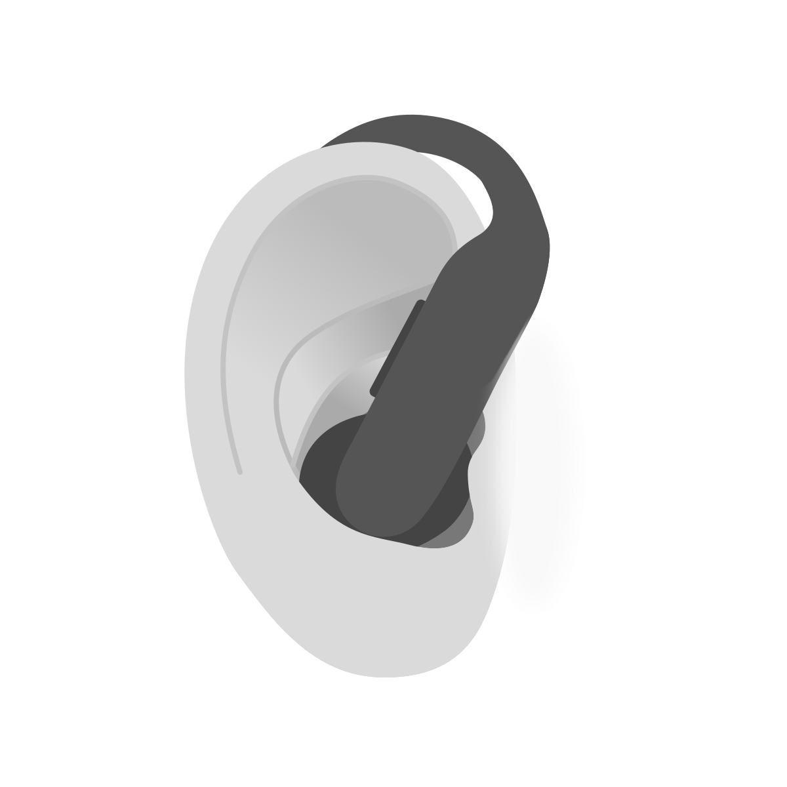
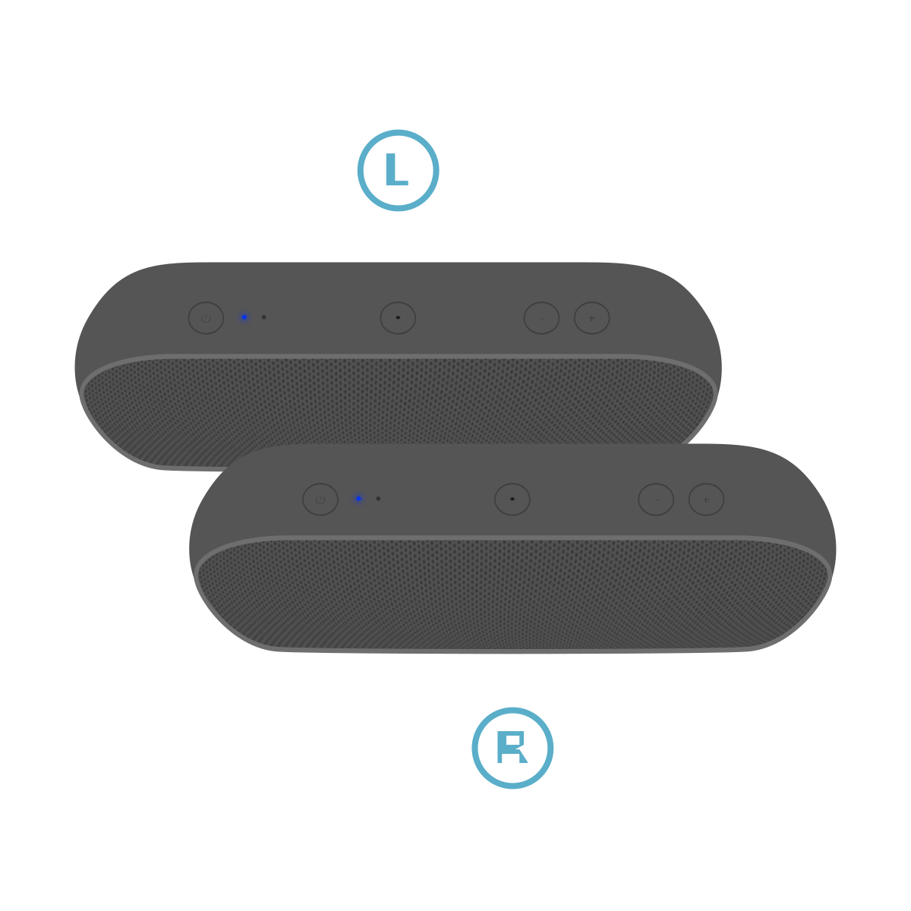

<main>

  <section class="hero wrap-width">
    <p class="hero__greeting">hi, i'm katrina.</p>
    <h1 class="hero__rotator heading-lg">i <button id="rotator-word" class="rotator" data-target="#ship"><span id="rotator-stage" class="rotator-stage"><span id="rotator-letters" class="rotator-letters"></span></span><div class="word-border"></div></button> <span id="rotator-tail">things.</span><button id="rotator-next"><svg viewBox="0 0 24 24" fill="none"><path d="M9 5l7 7-7 7" stroke="currentColor" stroke-width="1.8" stroke-linecap="round" stroke-linejoin="round"/></svg></button></h1>
  </section>

  <div id="word-cursor" class="word-cursor" aria-hidden="true"></div>

  <section class="text-emphasize wrap-width" id="how-i-think">
    <p>I'm an interaction design leader and builder with 15+ years of experience and a foundation in engineering. I lead multidisciplinary teams from concept through launch, shipping consumer hardware and software products used by millions worldwide.</p>
    <p>Projects start with who and what we're solving for, then take shape through collaborative debate balancing user needs, business goals, and feasibility. I bridge interaction design, technology, and storytelling to make complex experiences feel natural and intuitive.</p>
  </section>

  <section class="wrap-width">
    <h2><p class="heading" id="work">Apple</p></h2>
    <p>Beats Electronics</p>
    <!-- <p class="section-intro">From hover states to beer</p> -->
    <div class="gallery-entry__wide">
      <div class="gallery-entry__media">
        
      </div>
      <p class="gallery-entry__footnote">Photo: <a href="https://www.pexels.com/photo/wireless-headphones-and-tablet-22696331/" target="_blank" rel="noopener" class="link-border">Laura Chouette</a></p>
      <div class="gallery-entry__text">
        <h3 class="subhead">Headphones, earbuds, speakers & accessories</h3>
        <p>I led the Beats Human Interface (HI) team to deliver end-to-end experiences across 7+ shipped hardware products and companion software experiences, as well as the Beats app for Android and new capabilities like <a class="link-border link-accent" href="https://support.apple.com/guide/beats/use-beats-studio-pro-dev9148780ba/web" target="blank">USB Audio</a> and <a class="link-border link-accent" href="https://www.beatsbydre.com/heart-rate-monitoring" target="blank">heart rate monitoring</a> for products including Beats 360, Powerbeats Pro 2, Powerbeats Fit, Beats Studio Pro, Beats Pill and more. I drove feature scope decisions with cross-functional teams and senior leadership, navigating platform, cost, and tight program timelines to determine what we could deliver and when.</p>
        <p>As the Beats portfolio doubled, I served as DRI on key launches while building and scaling the HI organization through hiring, training, and mentoring designers across levels. I established the structure, processes, and support needed for the team to operate confidently while delivering against program milestones.</p>
        <div class="highlights" id="ship">
          <h4>Product Highlights</h4>
          <div class="cols">
            <div class="col">
              <div class="highlight-image"></div>
              <div class="col-heading">
                <h5>Beats 360</h5>
                <span class="year">2026</span>
              </div>
              <span><p>Lightweight true-wireless headphones with interchangeable ear cushions</p></span>
              <span><a class="link-border link-accent" href="https://www.tomsguide.com/audio/headphones/beats-360-review" target="blank">Tom's Guide Review</a></span>
            </div>
            <div class="col">
              <div class="highlight-image"><picture><source media="(prefers-color-scheme: dark)" srcset="assets/images/product-bud-in-ear-dark.svg"></picture></div>
              <div class="col-heading">
                <h5>Powerbeats Pro 2</h5>
                <span class="year">2025</span>
              </div>
              <span><p>First Beats/Apple audio product to introduce heart rate monitoring</p></span>
              <span><a class="link-border link-accent" href="https://www.gq.com/story/gq-tech-awards-2025#fitness-and-health-tech" target="blank">GQ Tech Awards, 2025</a></span>
              <span><a class="link-border link-accent" href="https://www.t3.com/active/t3-awards-2025-all-wearable-winners-announced" target="blank">T3 Awards, 2025</a></span>
            </div>
            <div class="col">
              <div class="highlight-image"></div>
              <div class="col-heading">
                <h5>Beats Pill</h5>
                <span class="year">2024</span>
              </div>
              <span><p>Portable bluetooth speaker featuring grouping, USB audio, and charge out</p></span>
              <span><a class="link-border link-accent" href="https://youtu.be/7U5_sjHe4To?si=r2lXZoL5_hMMFekG&t=77" target="blank">Feature Review</a></span>
            </div>
          </div>
        </div>
      </div>
    </div>

    <div class="gallery-entry gallery-entry--spk">
      <div class="gallery-entry__media gallery-entry__media--spk">
        <!-- Interactive speaker: assets/css/speaker.css + assets/js/speaker.js -->
        <div class="spk-slot" id="spk-slot">
          <div class="spk-frame" id="spk-frame">
            <div class="spk-stage" id="spk-stage">
              {% include "svg/speaker.svg" %}
            </div>
            <div class="spk-badge" id="spk-badge" data-icon="power" data-off data-ring="" aria-hidden="true">
                  <svg class="spk-dial" viewBox="0 0 44 44"><circle class="spk-ring" id="spk-ring" cx="22" cy="22" r="20.5" pathLength="100"/></svg>
                  <svg class="spk-ico spk-i-hand" viewBox="0 0 26.29 40.72"><path d="M2.46,26.71l3.72,7.09c2.41,5.17,6,7.4,10.98,6.83,4.41-.5,9.15-4.69,9.09-10.59l.04-11.32c0-.27-.09-.52-.28-.76l-.02-.03c-.33-.5-.88-.8-1.47-.8-.97,0-1.76.79-1.76,1.76v1.95c0,.34-.27.61-.61.61s-.6-.26-.61-.6v-5.1c0-.97-.79-1.76-1.76-1.76s-1.76.79-1.76,1.76c0,0,.03,1.06.03,1.08v4.01c0,.34-.27.61-.61.61s-.61-.27-.61-.61v-4.52s.03-2.3.03-2.3c0-.18-.04-.37-.11-.58v-.02c-.03-.05-.05-.11-.07-.16-.16-.38-.46-.67-.85-.84-.18-.08-.38-.13-.59-.15h-.11s-.09,0-.09,0c-.12,0-.16,0-.2,0-.8.08-1.17.6-1.34,1.01-.03.07-.05.13-.07.18l-.03.09c-.02.08-.04.16-.04.24-.03.18-.05.35-.05.53v1.96h.01s0,.15.01,2.76v1.79c0,.34-.27.61-.61.61s-.61-.27-.61-.61c.01-3.48.02-4.34.03-4.59h0V6.18c0-.97-.79-1.76-1.76-1.76s-1.76.79-1.76,1.76l-.05,21.02-.03.91-.63-.75c-1.19-1.44-1.57-2.02-2.08-2.83l-1.99-3.13c-.65-.99-1.36-1.93-2.13-2.08-.07-.01-.14-.02-.21-.02-.31,0-.64.13-1,.39-.66.48-.55,1.76-.22,2.49l.67,1.33,1.53,3.2Z"/><path d="M15.51,10.14c-.12,0-.24-.03-.35-.09-.36-.19-.49-.64-.29-1,.41-.75.62-1.59.62-2.45,0-2.83-2.3-5.13-5.13-5.13s-5.13,2.3-5.13,5.13c0,.86.21,1.7.62,2.45.19.36.06.8-.29,1s-.8.06-1-.29c-.52-.96-.8-2.05-.8-3.15C3.75,2.96,6.71,0,10.35,0s6.6,2.96,6.6,6.6c0,1.1-.28,2.19-.8,3.15-.13.25-.38.38-.65.38Z"/></svg>
                  <svg class="spk-ico spk-i-eq" viewBox="0 0 24 24"><line class="spk-b1" x1="6.2" y1="6.2" x2="6.2" y2="17.8" style="transform-origin:6.2px 17.8px"/><line class="spk-b2" x1="12" y1="6.2" x2="12" y2="17.8" style="transform-origin:12px 17.8px"/><line class="spk-b3" x1="17.8" y1="6.2" x2="17.8" y2="17.8" style="transform-origin:17.8px 17.8px"/></svg>
                  <svg class="spk-ico spk-i-power" viewBox="0 0 24 24"><text class="spk-on-label" x="12" y="15.2">ON</text><text class="spk-off-label" x="12" y="15.2">OFF</text></svg>
                  <svg class="spk-ico spk-i-bt" viewBox="0 0 24 24"><path d="M7 7l10 10-5 4V3l5 4L7 17"/></svg>
                  <svg class="spk-ico spk-i-check" viewBox="0 0 24 24"><path d="M5 12.5l4.5 4.5L19 7.5"/></svg>
                  <svg class="spk-ico spk-i-link" viewBox="0 0 24 24"><circle cx="8.8" cy="12" r="5.8"/><circle cx="15.2" cy="12" r="5.8"/></svg>
                  <svg class="spk-ico spk-i-vol" viewBox="0 0 24 24" data-n="2"><path d="M3 9.5v5h3.5L11 18V6L6.5 9.5z"/><path class="spk-w1" d="M14 9.4a3.6 3.6 0 0 1 0 5.2"/><path class="spk-w2" d="M16.6 7a7 7 0 0 1 0 10"/><path class="spk-w3" d="M19.2 4.6a10.4 10.4 0 0 1 0 14.8"/></svg>
                </div>
                <div class="spk-sr" id="spk-live" role="status" aria-live="polite"></div>
                <div class="spk-drawer" id="spk-drawer" role="group" aria-label="Controls">
                  <button class="spk-tab" id="spk-tab" type="button" aria-expanded="false" aria-controls="spk-drawer-body" aria-label="Controls"><span>+</span></button>
                  <button class="spk-expand" id="spk-expand" type="button" aria-label="Expand" aria-expanded="false"><svg class="spk-i-out" viewBox="0 0 16 16" fill="none" stroke="currentColor" stroke-width="1.6" stroke-linecap="round" stroke-linejoin="round" aria-hidden="true"><path d="M9.5 2.5h4v4M13.5 2.5L9 7M6.5 13.5h-4v-4M2.5 13.5L7 9"/></svg><svg class="spk-i-in" viewBox="0 0 16 16" fill="none" stroke="currentColor" stroke-width="1.6" stroke-linecap="round" stroke-linejoin="round" aria-hidden="true"><path d="M13 7H9V3M9 7l4.5-4.5M3 9h4v4M7 9l-4.5 4.5"/></svg></button>
                  <div class="spk-drawer-body" id="spk-drawer-body">
                    <div class="spk-dhead"><h3>Controls</h3><span class="spk-caption is-shown" id="spk-caption"><svg class="spk-snd" viewBox="0 0 24 24" width="13" height="13" role="img" aria-label="Sound on"><title>Sound on</title><path d="M4 9.5v5h3.5L12 18V6L7.5 9.5zM15.5 9a4 4 0 0 1 0 6" fill="none" stroke="currentColor" stroke-width="2" stroke-linecap="round" stroke-linejoin="round"/></svg> Tap left button to power on</span></div>
                    <p class="spk-how"><span class="spk-desk">Tap speaker's buttons or actions below, or use shortcuts</span><span class="spk-touch">Tap speaker's buttons or actions below</span></p>
                    <div class="spk-cols">
                      <div>
                        <h4>Power</h4>
                        <ul>
                          <li><button type="button" data-step="power"><span class="spk-g"><i></i></span>Power On/Off<kbd class="spk-kbd">1</kbd></button></li>
                          <li><button type="button" data-step="pair"><span class="spk-g spk-g--hold"><i></i></span>Pair BT<kbd class="spk-kbd">2</kbd></button></li>
                        </ul>
                        <h4>Volume</h4>
                        <ul>
                          <li><button type="button" data-step="up"><span class="spk-g"><i></i></span>Volume Up<kbd class="spk-kbd">+</kbd></button></li>
                          <li><button type="button" data-step="down"><span class="spk-g"><i></i></span>Volume Down<kbd class="spk-kbd">−</kbd></button></li>
                        </ul>
                      </div>
                      <div>
                        <h4>Multifunction button</h4>
                        <ul>
                          <li><button type="button" data-step="play"><span class="spk-g"><i></i></span>Play/Pause<kbd class="spk-kbd spk-kbd--wide">Space</kbd></button></li>
                          <li><button type="button" data-step="next"><span class="spk-g"><i></i><i></i></span>Next<kbd class="spk-kbd" aria-label="Right arrow"><svg viewBox="0 0 10 10" width="8" height="8" aria-hidden="true"><path d="M3.5 1.5L7 5l-3.5 3.5" fill="none" stroke="currentColor" stroke-width="1.4" stroke-linecap="round" stroke-linejoin="round"/></svg></kbd></button></li>
                          <li><button type="button" data-step="prev"><span class="spk-g"><i></i><i></i><i></i></span>Previous<kbd class="spk-kbd" aria-label="Left arrow"><svg viewBox="0 0 10 10" width="8" height="8" aria-hidden="true"><path d="M6.5 1.5L3 5l3.5 3.5" fill="none" stroke="currentColor" stroke-width="1.4" stroke-linecap="round" stroke-linejoin="round"/></svg></kbd></button></li>
                          <li><button type="button" data-step="link"><span class="spk-g spk-g--hold"><i></i></span>Group Speakers<kbd class="spk-kbd">3</kbd></button></li>
                        </ul>
                      </div>
                    </div>
                  </div>
                </div>
          </div>
          <div class="spk-scrim" id="spk-scrim"></div>
        </div>
        <p class="gallery-entry__footnote">Tones &amp; LEDs are for demonstration</p>
      </div>
      <div class="gallery-entry__text">
        <h3 class="subhead">Beeps & boops, blinks & buzzes</h3>
        <p>I guided cohesive experiences across a diverse portfolio, maintaining consistency with Apple policy while preserving a distinct Beats identity. To align design intent throughout development, I built trusted relationships across Beats and Apple's HI, Accessibility, and Software Engineering teams.</p>
        <p>Big and little details, from interaction flows to tones and LED blinks, were captured in shared design systems to improve consistency, implementation, and validation. Designs were accessibility-minded for diverse sensory needs, including hardware tonal cues and corresponding software settings.</p>
      </div>
    </div>

    <div class="gallery-entry gallery-entry--reverse">
      <div class="gallery-entry__media-stack">
      <div class="gallery-entry__media">
        {% include "svg/proto-loop.svg" %}
      </div>
      <div class="proto-scrub" id="proto-scrub">
        <div class="proto-trail" aria-hidden="true">
          <span class="proto-line"></span>
          <span class="proto-head"></span>
          <ol class="proto-stops">
            <li class="proto-stop" data-stage="0" style="--k:0"><span class="proto-icon-wrap"><svg class="proto-icon" viewBox="0 0 24 24" fill="none" stroke="currentColor" stroke-width="1.6" stroke-linecap="round" stroke-linejoin="round" aria-hidden="true"><path d="M9.5 18.5h5M10.5 21h3"/><path d="M12 3.5a5.5 5.5 0 0 0-3.3 9.9c.6.5 1 1.2 1 2v.6h4.6v-.6c0-.8.4-1.5 1-2A5.5 5.5 0 0 0 12 3.5z"/></svg></span><span class="proto-label">Ideate</span></li>
            <li class="proto-stop" data-stage="1" style="--k:1"><span class="proto-icon-wrap"><svg class="proto-icon" viewBox="0 0 24 24" fill="none" stroke="currentColor" stroke-width="1.6" stroke-linecap="round" stroke-linejoin="round" aria-hidden="true"><rect x="3" y="6.5" width="7" height="11" rx="1.5"/><rect x="14" y="6.5" width="7" height="11" rx="1.5"/><path d="M11.2 12h1.6"/></svg></span><span class="proto-label">Storyboard</span></li>
            <li class="proto-stop" data-stage="2" style="--k:2"><span class="proto-icon-wrap"><svg class="proto-icon" viewBox="0 0 24 24" fill="none" stroke="currentColor" stroke-width="1.6" stroke-linecap="round" stroke-linejoin="round" aria-hidden="true"><path d="M8 8l-4 4 4 4M16 8l4 4-4 4M13.5 6.5l-3 11"/></svg></span><span class="proto-label">Prototype</span></li>
            <li class="proto-stop" data-stage="3" style="--k:3"><span class="proto-icon-wrap"><svg class="proto-icon" viewBox="0 0 24 24" fill="none" stroke="currentColor" stroke-width="1.6" stroke-linecap="round" stroke-linejoin="round" aria-hidden="true"><path d="M14.6 4.8a4.2 4.2 0 0 0-4.9 5.5l-5.2 5.2a1.7 1.7 0 0 0 2.4 2.4l5.2-5.2a4.2 4.2 0 0 0 5.5-4.9l-2.5 2.5-2.1-.6-.6-2.1z"/></svg></span><span class="proto-label">Build</span></li>
            <li class="proto-stop" data-stage="4" style="--k:4"><span class="proto-icon-wrap"><svg class="proto-icon" viewBox="0 0 24 24" fill="none" stroke="currentColor" stroke-width="1.6" stroke-linecap="round" stroke-linejoin="round" aria-hidden="true"><path d="M4 10.5h16V19a1.2 1.2 0 0 1-1.2 1.2H5.2A1.2 1.2 0 0 1 4 19z"/><path d="M4 10.5L2.6 5.8h6.4l1 4.7M20 10.5l1.4-4.7h-6.4l-1 4.7"/><path d="M10 14.2h4"/></svg></span><span class="proto-label">Ship</span></li>
          </ol>
        </div>
        <input class="proto-range" id="proto-range" type="range" min="0" max="13130" step="any" value="0" aria-label="Experience prototyping animation timeline" aria-valuetext="Ideate">
      </div>
      </div>
      <div class="gallery-entry__text">
        <h3 class="subhead">Experience Prototyping</h3>
        <p>I explored 20+ hardware and software concepts for Beats and Apple, spanning new hardware interaction models and software capabilities. I rapidly prototyped everything from simulated demos to fully functioning proofs of concept combining swiftUI and hardware to surface early insights, explore direction, and validate concepts before committing to a program or hardware build.</p>
      </div>
    </div>
  </section>

  <section class="wrap-width" id="disney">
    <p class="heading">The Walt Disney Company</p>
    <p class="section-intro">At Disney, I evolved from designing static comps to building in code, developing a practice that merged design sensibility with software. That progression led to larger projects, broader systems thinking, and eventually leading my own team. These projects trace that evolution and the ideas that continue to shape how I design and lead.</p>

    <div class="work-list">
{% for w in work %}      <a class="work-list__row" id="{{ w.slug }}" href="work/{{ w.slug }}.html">
        <span class="work-list__index">{{ loop.index | string | padStart }}</span>
        <span class="work-list__title-group">
          <span class="work-list__title">{{ w.title }}</span>
          <span class="work-list__role">{{ w.role }}</span>
        </span>
        <span class="work-list__year">{{ w.year }}</span>
        <span class="work-list__chevron" aria-hidden="true"><svg viewBox="0 0 24 24" fill="none"><path d="M9 5l7 7-7 7" stroke="currentColor" stroke-width="1.8" stroke-linecap="round" stroke-linejoin="round"/></svg></span>
      </a>
{% endfor %}    </div>
  </section>

  <section id="about" class="about wrap-width">
    <p>I love ramen, my golden retriever, and <a class="link-border" href="craft.html">easter eggs</a>.</p>
    <p>Let's <span class="about-accent">make something</span> together.</p>
  </section>

  <section id="contact" class="contact wrap-width">
    <span class="contact__pin">&#128075;</span>
    <a href="mailto:hello@katrinamacgregor.com"><span>hello@katrinamacgregor.com</span></a>
  </section>

</main>

{% include "footer.njk" %}

